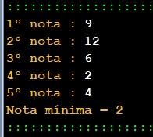

Ficha05_010
Nota Mínima
Contrua um algoritmo que solicite ao utilizador a nota de pauta de 5 alunos.
De seguida imprima a nota mínima.
|

|


pseudocode
// Programmer Ant0ni0 M@ns0 - Ant0ni0 M@ns0
begin
integer minimo = 999
for integer i from 1 to 6 step 1
read integer nota i + "º nota : "
if nota < minimo then
minimo = nota
end
end
write "Nota mínima = " + minimo
end
//pseudocode - Automatic translated by Algorithmi 22.05
//(c) Ant0nio M@nso Mon, 2022 Sep 26 16:04
Download Ficha05_010.alg
Algorithmi 22.05 Student version
(c) Antonio M@nso 2022
Instituto Politécnico de Tomar - All rights reserved